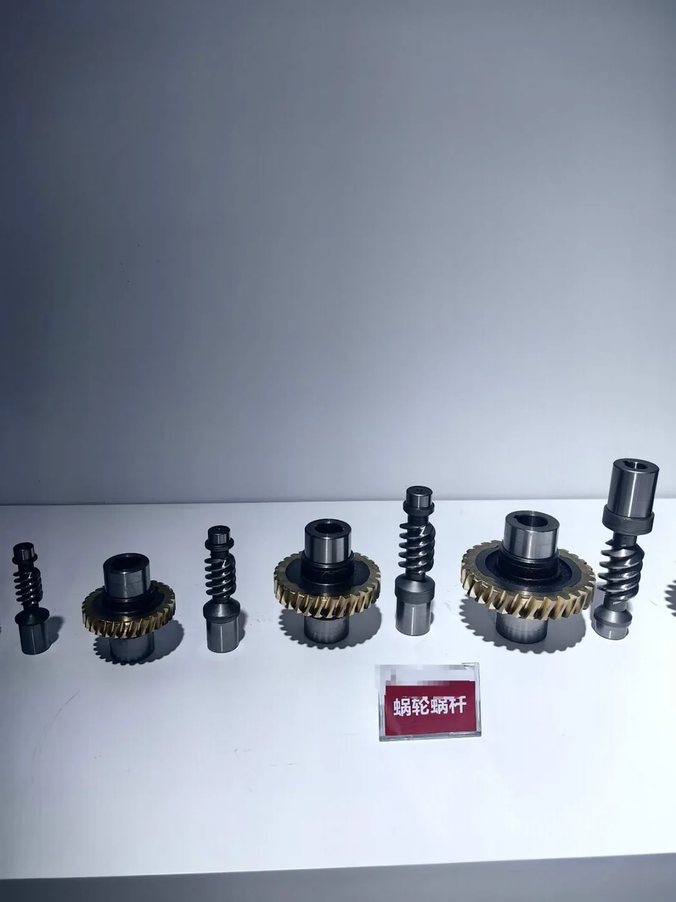

Understanding where the oil comes from is the first step to solving the problem.
1. Check the Breather Plug First
One of the most common causes of oil leakage is an incorrectly installed breather plug. During transportation, many worm gearboxes are fitted with a sealed plug to prevent lubricant leaking. Before operation, replace it with the correct breather plug for the gearbox mounting position.
As the gearbox runs, lubricant temperature rises. Air inside the housing expands and creates internal pressure. If this pressure cannot escape, oil may be pushed through the input or output shaft seals.
2. Check the Lubricant Level
Too much lubricant can also cause a worm gearbox oil leak. Excessive oil can increase internal pressure during operation and allow lubricant to escape through oil seals or the breather.
Solution: Check the recommended oil level for the gearbox model and mounting position. Avoid overfilling.
3. Inspect the Input and Output Oil Seals
If oil appears around the input or output shaft, inspect the oil seal. Common causes include long-term wear, shaft misalignment, excessive radial load, contamination or damage during installation.
Solution: Replace the oil seal if necessary and check whether the motor and driven equipment are correctly aligned.
4. Confirm the Mounting Position
NMRV/RV worm gearboxes can be installed in different mounting positions, such as B3, B6, B7, B8, V5 and V6. The correct locations of the breather, oil-level and drain plugs may change with the mounting orientation.
Solution: Confirm the mounting position before operation and install the plugs accordingly.
My New Worm Gearbox Is Leaking Oil. Is It Defective?
Not necessarily. If a new worm gearbox leaks shortly after installation, first check the breather plug, oil level and mounting position before assuming the gearbox is defective. A sealed transportation plug that has not been replaced by the correct breather can cause pressure to build as oil temperature rises and push lubricant through the shaft seals.
For troubleshooting, send your supplier:
- Gearbox model
- Mounting position
- Photo of the leakage point
- Photo of the breather plug
- Short video while the gearbox is running
These details can usually help determine whether the issue relates to installation, lubrication or the oil seal.
Need Help with a Leaking Worm Gearbox?
SMK Transmission supplies NMRV/RV worm gearboxes, worm gear motors and electric motors for industrial applications. Send us the gearbox model, mounting position and photos or videos of the leakage area; our team can help identify the likely cause and recommend the appropriate solution.